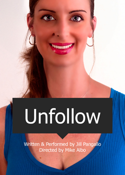

past performance | ||
|  |
Unfollow Jill Pangallo's latest multimedia, persona-based performance,"Unfollow," picks up where "Happy Go Sad" (Wild Project, March 2012) left off and features the directorial expertise of writer/performer Mike Albo. Pangallo’s detailed, nuanced portraits oscillate between emotional and emotive polarities—funny and serious, happy and sad, tribute and observation. Universally familiar models and tropes—internet profiles, broadcast advertising, industrial videos andmainstream dance, amongst others—are referenced and subverted as Pangallo continues to explore the crossover between art and entertainment, as well the way humor functions within this interchange. | |
|
“Jill Pangallo unleashes her inner angels and demons in a raucous spectacle of clashing alter-egos, therapeutic psychodrama and cathartic release.” Michael Duncan, Curator and Critic “What makes us who we are? is a formidable question, and humor like Pangallo’s seems to get us closer to an honest response.” Caitlin Haskell, Art Papers “Pangallo’s work is smart, funny, highly original and kinda creepy.” Glasstire Jill Pangallo (Writer & Performer) is a New York City-based artist. She has performed and shown internationally at, on and in a variety of clubs, galleries, theaters, television, films, websites, project spaces and festivals. She is involved in two collaborative duos, SKOTE, with Alex P. White and The HoHos, with Cathy Cervenka. She has received numerous awards and accolades including grants from the Idea Fund, City of Austin and Foundation for Contemporary Arts. The Austin Critics’ Table named her Texas Biennial performance Let Me Entertain You, “Best Work of Art” in 2009. In 2010 she attended the Skowhegan School, a visual arts residency in Maine. See more at www.jillpangallo.com Mike Albo (Director) is a writer and performer who lives and loves in Brooklyn. He is the author of the novels Hornito, The Underminer: The Best Friend Who Casually Destroys Your Life (co-written with Virginia Heffernan), and the novella, The Junket. He performs solo as well as in the comedy trio, Unitard. He has toured the US, Canada and Europe as a solo performer. He is also a founding member of the legendary downtown dance troupe, The Dazzle Dancers. Check out his spacey website: Mikealbo.com. | ||
upcoming performances |
|||
 |
|||
| EVQ Film Festival 2018 August 20-25 |
|||
performance archives |
|||
| 2018 | 2017 | 2016 | 2015 |
| 2014 | 2013 | 2012 | 2011 |
| 2010 | 2009 | 2008 | 2007 |